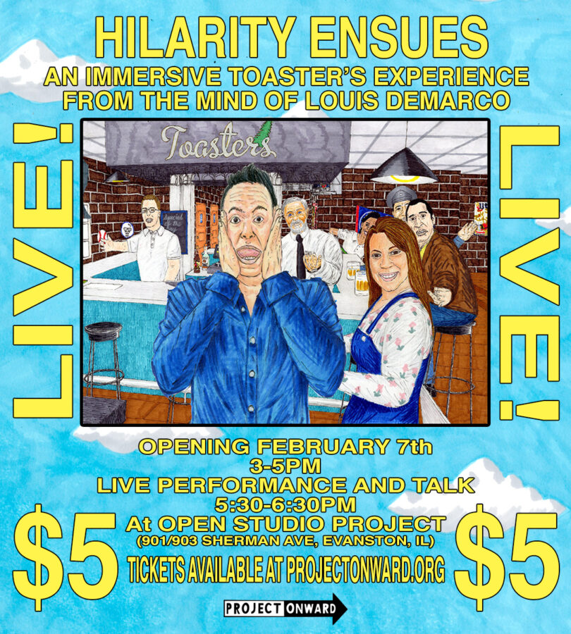

Hilarity Ensues: An Immersive Toaster’s Experience from the Mind of Louis Demarco
Hilarity Ensues is an immersive trip into the singular sitcom universe of artist Louis DeMarco, opening February 7. The exhibition brings together over one hundred original drawings, paintings, animated videos, comics, and a special live performance from DeMarco’s long-running fictional sitcom Toaster’s.
Toaster’s is an imaginary bar inspired by obsessive references to classic television sitcoms like Cheers and Friends, reimagined through DeMarco’s highly personal and surreal lens. Populated by characters based on real people from the artist’s life, the show’s storylines spiral into absurdity, featuring rakish doppelgangers, misbehaving sports mascots, and the occasional spontaneous combustion. Equal parts affectionate parody and emotional autobiography, Toaster’s transforms familiar pop culture into something intimate, unpredictable, and deeply funny.
The exhibition culminates in a live performance of the Toaster’s episode Leave It To Beav Montauk, offering audiences a rare opportunity to experience DeMarco’s work as performance, animation, and narrative all at once, followed by an artist talk hosted by Rob Lentz.
Louis DeMarco (b. 1985) is an artist, musician, and writer with autism. Working in vivid color and an uncannily precise rendering style, DeMarco constructs elaborate alternative worlds. They range from the sitcom realm of Toaster’s to Loudemar, a fantastical island of crystal towers and “animal protectors” who speak in the voices of dated television celebrities. Across these worlds, DeMarco explores themes of disappointment, anxiety, and relationship negotiation through pop culture references and a distinctive comedic sensibility.
DeMarco joined Project Onward, a non-profit studio and gallry for artists with mental and developmental disabilities, in 2005 and lives in the West Town neighborhood of Chicago.
Hilarity Ensues opens February 7 and will be on view at OPEN STUDIO PROJECT til March 28th.